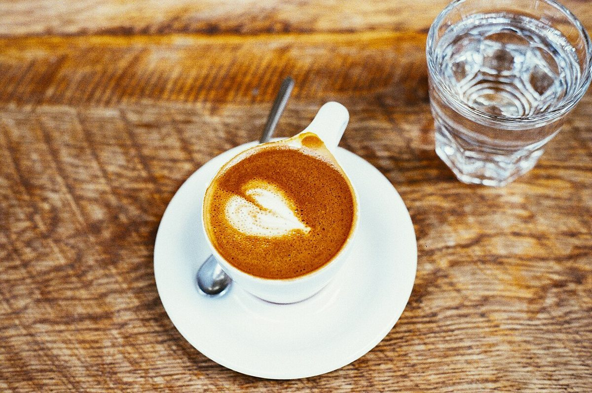
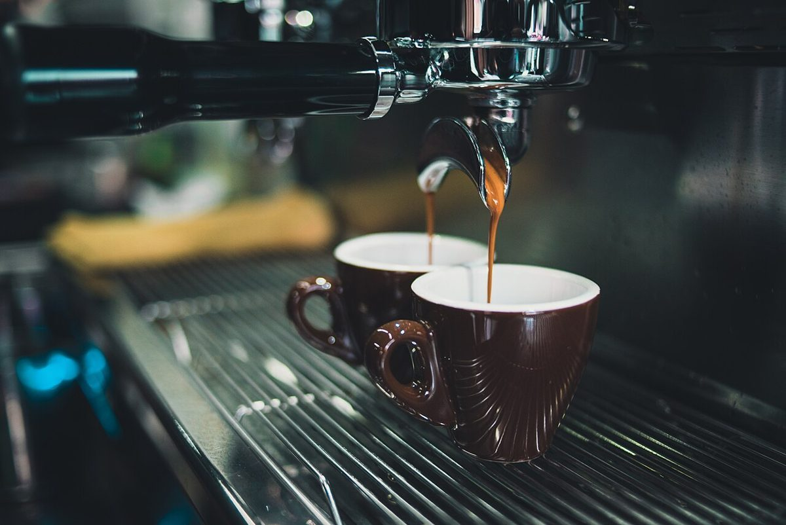
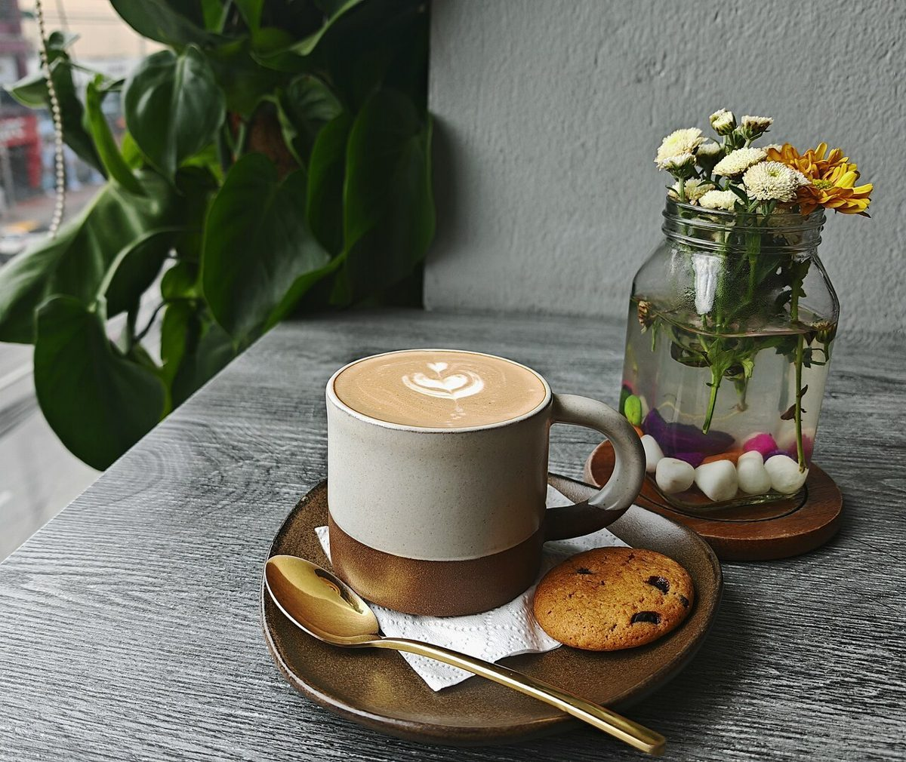

写真はコーヒーとカフェまわりのイメージです。お店のものではなく、お店で提供している商品を示すものでもありません。
制作側の連想
ピロー包装機の部位を、配置図にしてみる
このサイトは、品物をフィルムで枕のような形に包む機械「ピロー包装機」を図にしたつもりで作りました。六つの部位に番号をふり、上の図と並べています。制作側の連想で、お店の理念・由来とは無関係です。実際の包装機の仕様を示すものでもありません。
凡例
六つの部位
- 1フィルム巻出し包材のフィルムを巻いたロールを載せて、送り出す部分。
- 2フォーマー(製袋筒)フラットなフィルムを筒状に折りたたんでいく、じょうご形の部品。
- 3縦シール筒の合わせ目を、長さ方向に貼り合わせる部分。
- 4横シール(エンドシール)筒を横向きに挟んで、袋の端をふさぐ部分。
- 5カッター横シールの途中で、袋を一つずつ切り離す刃。
- 6搬送コンベヤ品物をフィルムの筒へ運び入れる、ベルトの部分。


写真は、パンやコーヒー豆のイメージです。お店のものではありません。
ご案内
お店のこと(確認できたものだけ)
| 所在地 | 〒988-0634 宮城県気仙沼市要害２３−２ |
|---|---|
| 電話 | 準備中 |
| 営業時間 | 準備中 |
| 定休日 | 準備中 |
| ご予約 | 準備中 |
| 駐車場 | 準備中 |
| SNS | Instagram @nagame_rito |